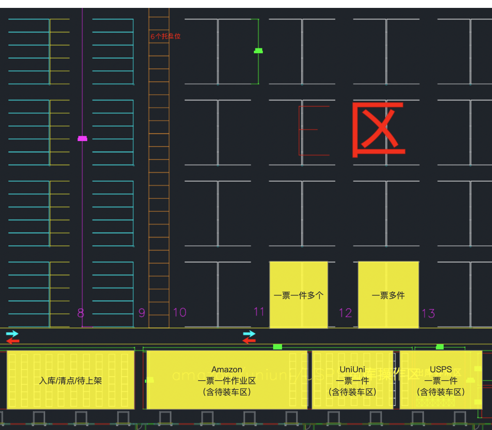

面积口径
截图区域即 12,000㎡ 集中作业边界
本方案后续平面图按这张截图的完整区域作为 Melo 客户可用面积，不再从图内二次切分 30%。 黄色区域为现有初始作业设想，左侧货架/托盘位与下方 Dock 作业带需要围绕 Alpha、Beta、Gamma 与入库上架重新组织。
12,000㎡规划面积
6个托盘位图中已标注参考
Dock侧适合出入库缓冲

业务判断
为什么不能只做播种墙
三通道流量
按 SOP 阈值重算
Alpha + Beta 是集中仓的主流量，Gamma 只承接复杂订单。
入库吞吐
收货与上架压力
入库节奏
按收货完成日
入库 SKU
收货量 Top 候选
| SKU | 入库件数 | 行数 |
|---|
库区设计
从 Dock 到后备区的集中仓布局
DOCK / 出库口
R 收货缓冲区
入库 Dock · 柜号 staging
A 爆款前置整托区
Top SKU · Alpha 快道
B 单品多件工作站
Beta 双人工位
C 多品播种区
4-6 面开放式播种墙
D 大件/异常区
地面画格 · 缺货破损
E 包材与压缩区
5 种包材 · 7天安全库存
F 出库分拨暂存
按承运商 lane 分堆
后备整托库存 / 高位货架 / 补货通道
作业流程
订单池到装车
人员配置
按通道布人
Top SKU
前置区候选
| SKU | 30天件数 | 日均 | 库存天数 | 族群 |
|---|
货品结构
库存 SKU 族群
高频组合
可转 Beta 的 AB 组合
日订单波动
30天趋势
订单结构
每天不同订单类型
单品单件
单品多件
多品多件
待确认
落地前必须补齐